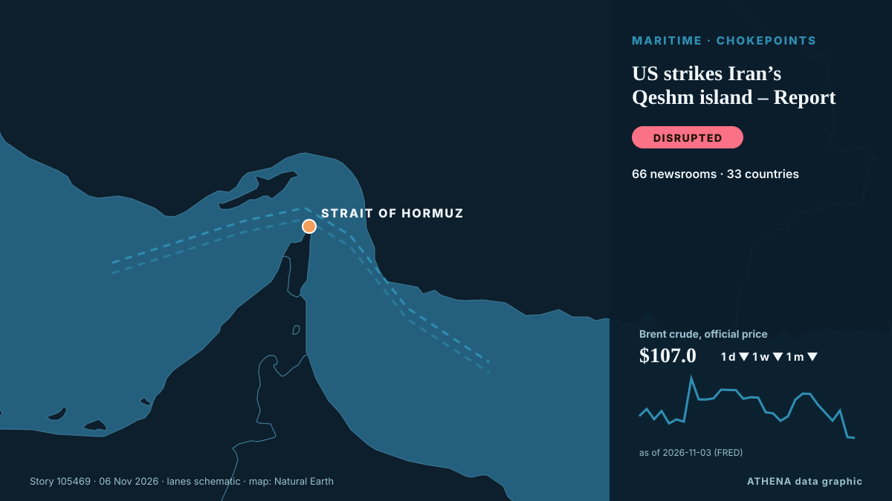

Wars & conflicts
SponsoredPresented by  Cybernetics and Artificial Intelligence Lab Welcome to the Cybernetics and Artificial Intelligence Laboratory, established at the Department of Business Administration of the National and Kapodistrian University of Athens. The lab is headed by Professor Dimitrios Thomakos. The lab aims to do research that can be published in top venues. Our research uses tools and methods of Artificial Intelligence, and lies in the following areas: - Forecasting - Decision making - Cyber security - Finance We are always looking forward to collaborating with exceptional students!
Cybernetics and Artificial Intelligence Lab Welcome to the Cybernetics and Artificial Intelligence Laboratory, established at the Department of Business Administration of the National and Kapodistrian University of Athens. The lab is headed by Professor Dimitrios Thomakos. The lab aims to do research that can be published in top venues. Our research uses tools and methods of Artificial Intelligence, and lies in the following areas: - Forecasting - Decision making - Cyber security - Finance We are always looking forward to collaborating with exceptional students!
| 24 Oct | 0 |
|---|---|
| 25 Oct | 0 |
| 26 Oct | 0 |
| 27 Oct | 0 |
| 28 Oct | 0 |
| 29 Oct | 0 |
| 30 Oct | 0 |
| 31 Oct | 2 |
| 1 Nov | 0 |
| 2 Nov | 2 |
| 3 Nov | 12 |
| 4 Nov | 5 |
| 5 Nov | 1 |
| 6 Nov | 1 |

US strikes Iran’s Qeshm island – Report
The US has not publicly announced the attacks, so as not to signal any intention of resuming major combat operations, the Wall Street Journal reported. from CNA (Channel NewsAsia)
Stranded cruise ship Odyssey leaves Cambodia with no passengers
A U.S. cruise ship that suspended its operations in Cambodia has left with only crew aboard, according to Cambodian officials. from ABC News (International)
Israeli strikes in Gaza kill 8, including a child
Five people were killed in Khan Yunis and three in Gaza City, according to Gaza's civil defence service. from Free Malaysia Today
Oil falls for a fourth day on expectations for lower risk of Iran war escalation
Both oil benchmarks closed at their lowest since Aug 31. from The Business Times
Indonesia deploys over 20,000 troops to Jakarta amid wiretapping probe
Authorities have not confirmed that the military deployment in Jakarta is connected to the arrests of two senior police officers and former national police chief Listyo Sigit Prabowo. from CNA (Channel NewsAsia)
Asia hopes Democrats can provide relief from Trump's Iran war, tariffs
ASIAN nations that have borne the brunt of the US-Israeli war on Iran and US President Donald Trump’s trade tariffs are hopeful that Democrats will be able to temper his most harmful policies. from New Straits Times
Dozens dead and missing after Russian strike on Ukrainian aid centre, officials say
Nov 4 - The death toll from a Russian bombing of an aid distribution point in Ukraine's southeastern Zaporizhzhia region on Monday has risen to 37, with dozens missing, officials said, in one of the… from The Straits Times
Drone attack sparks fire at Ozon logistics centre in Russia’s Adygea
A fire broke out at an Ozon logistics centre in the city of Adygeysk, in Russia’s Republic of Adygea, following a drone attack. from AzerNews
Hezbollah denies sending military experts to Yemen
Hezbollah denied Wednesday allegations by Yemen’s Southern Transitional Council regarding the presence of Hezbollah experts in the country. from Naharnet
Washington strikes Iranian targets in the Strait of Hormuz: US official
The United States launched strikes on Iranian targets, a U.S. official said, in what appeared to be a limited operation on the eve of Tuesday’s crucial midterm elections. from The National Herald
Russia hits power stations in Ukraine’s regions of Kyiv
Russia has hit two power stations in Ukraine’s regions of Kyiv and Zhytomyr, the Russian defence ministry said on Telegram on Wednesday, keeping up nearly daily strikes on its neighbour’s energy… from Cyprus Mail
Russian strikes disrupt water and power in Kyiv
KYIV, Ukraine, Nov 4, (AP): Overnight attacks on critical infrastructure triggered power and water outages across Kyiv and surrounding regions Wednesday as rescuers combed throug... from Arab Times
Russian strike on Kharkiv hospital raises injury toll to 73
In Kharkiv, 73 people were injured as a result of a Russian attack on the night of November 3. from Ukrinform (English)
Indian seafarer killed in attack off Oman; 13 crew rescued from Al Jusufi
Union shipping minister Sarbananda Sonowal confirmed the death of seafarer Gandhar Nahim Ajij of Gujarat. from Hindustan Times
North Korea launches unidentified projectile toward the sea, South Korea says
South Korea says North Korea has launched an unidentified projectile toward the sea. from ABC News (International)
2,800 troops to join first Ukraine support force exercise in Poland
The drill will simulate moving troops and supplies such as food and fuel, and was agreed at a Coalition of the Willing summit in July. from The Independent
Russian forces strike Dnipro at dawn, injuring at least 15 people – photos
Residential buildings and civilian infrastructure facilities were damaged in a Russian strike on Dnipro early on 3 November. from Ukrainska Pravda (English)
Iran warns new war could last longer after Trump threatens strikes
Diplomatic efforts to end the Middle East war have been punctuated by repeated threats from the United States and Israel to resume bombardments as they hold crucial elections. from Channels TV
Iran Speaker: Ball in US court to prevent war
Shafaq News- Tehran Iran has delivered a "strong and rational response" to Washington, and the ball is now in the United States' court to prevent war, Parliament Speaker Mohammad Bagher Ghalibaf said… from Shafaq News (English)